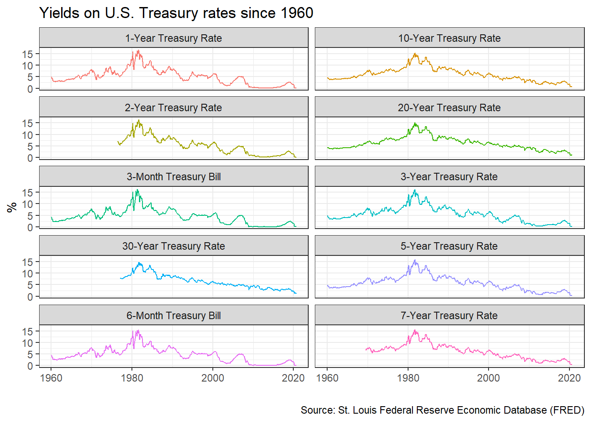
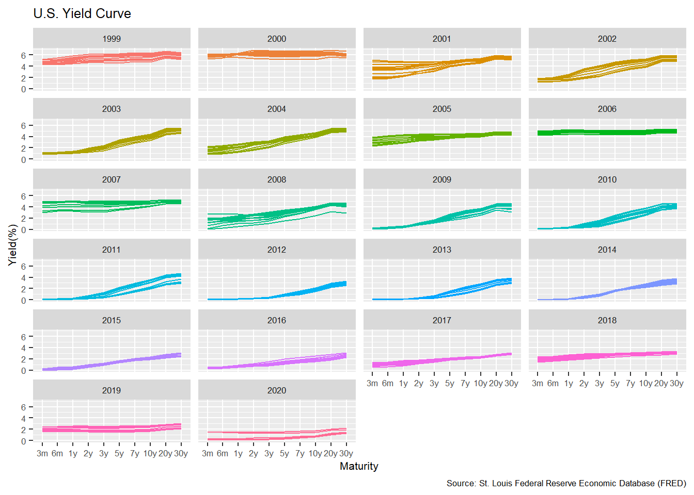
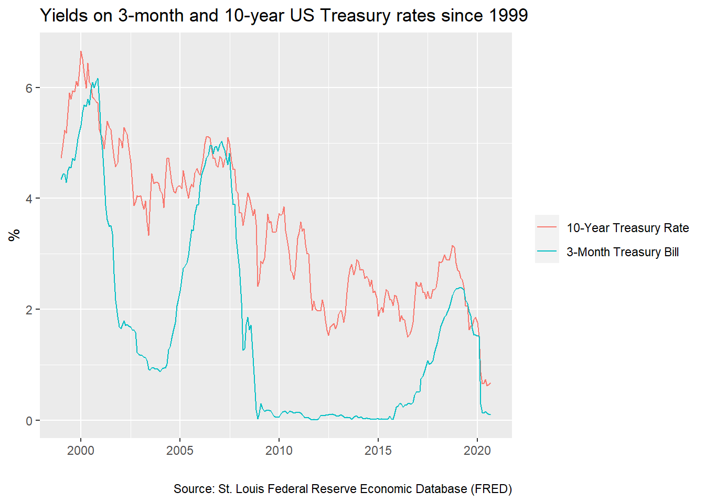
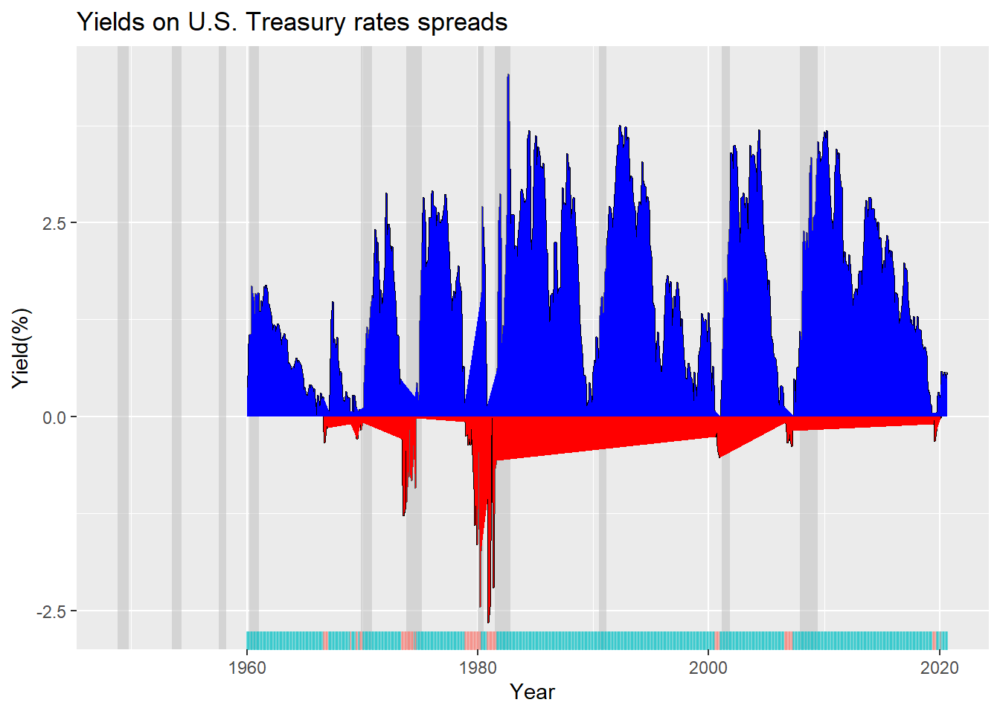

Challenge 1: Yield Curve inversion
Every so often, we hear warnings from commentators on the “inverted yield curve” and its predictive power with respect to recessions. An explainer what a inverted yield curve is can be found here. If you’d rather listen to something, here is a great podcast from NPR on yield curve indicators
In addition, many articles and commentators think that, e.g., Yield curve inversion is viewed as a harbinger of recession. One can always doubt whether inversions are truly a harbinger of recessions, and use the attached parable on yield curve inversions.

In our case we will look at US data and use the FRED database to download historical yield curve rates, and plot the yield curves since 1999 to see when the yield curves flatten. If you want to know more, a very nice article that explains the yield curve is and its inversion can be found here. At the end of this chllenge you should produce this chart

First, we will use the tidyquant package to download monthly rates for different durations.
# Get a list of FRED codes for US rates and US yield curve; choose monthly frequency
# to see, eg., the 3-month T-bill https://fred.stlouisfed.org/series/TB3MS
tickers <- c('TB3MS', # 3-month Treasury bill (or T-bill)
'TB6MS', # 6-month
'GS1', # 1-year
'GS2', # 2-year, etc....
'GS3',
'GS5',
'GS7',
'GS10',
'GS20',
'GS30') #.... all the way to the 30-year rate
# Turn FRED codes to human readable variables
myvars <- c('3-Month Treasury Bill',
'6-Month Treasury Bill',
'1-Year Treasury Rate',
'2-Year Treasury Rate',
'3-Year Treasury Rate',
'5-Year Treasury Rate',
'7-Year Treasury Rate',
'10-Year Treasury Rate',
'20-Year Treasury Rate',
'30-Year Treasury Rate')
maturity <- c('3m', '6m', '1y', '2y','3y','5y','7y','10y','20y','30y')
# by default R will sort these maturities alphabetically; but since we want
# to keep them in that exact order, we recast maturity as a factor
# or categorical variable, with the levels defined as we want
maturity <- factor(maturity, levels = maturity)
# Create a lookup dataset
mylookup<-data.frame(symbol=tickers,var=myvars, maturity=maturity)
# Take a look:
mylookup %>%
knitr::kable()| symbol | var | maturity |
|---|---|---|
| TB3MS | 3-Month Treasury Bill | 3m |
| TB6MS | 6-Month Treasury Bill | 6m |
| GS1 | 1-Year Treasury Rate | 1y |
| GS2 | 2-Year Treasury Rate | 2y |
| GS3 | 3-Year Treasury Rate | 3y |
| GS5 | 5-Year Treasury Rate | 5y |
| GS7 | 7-Year Treasury Rate | 7y |
| GS10 | 10-Year Treasury Rate | 10y |
| GS20 | 20-Year Treasury Rate | 20y |
| GS30 | 30-Year Treasury Rate | 30y |
df <- tickers %>% tidyquant::tq_get(get="economic.data",
from="1960-01-01") # start from January 1960
glimpse(df)## Rows: 6,774
## Columns: 3
## $ symbol <chr> "TB3MS", "TB3MS", "TB3MS", "TB3MS", "TB3MS", "TB3MS", "TB3MS...
## $ date <date> 1960-01-01, 1960-02-01, 1960-03-01, 1960-04-01, 1960-05-01,...
## $ price <dbl> 4.35, 3.96, 3.31, 3.23, 3.29, 2.46, 2.30, 2.30, 2.48, 2.30, ...Our dataframe df has three columns (variables):
symbol: the FRED database ticker symboldate: already a date objectprice: the actual yield on that date
The first thing would be to join this dataframe df with the dataframe mylookup so we have a more readable version of maturities, durations, etc.
yield_curve <-left_join(df,mylookup,by="symbol") Plotting the yield curve
Yields on US rates by duration since 1960
#plot the yields curve
ggplot(yield_curve,
aes(x=date,
y=price,
color=factor(var),
fill=factor(var)))+
geom_line() +
#add a theme
theme_bw()+
#facet_wrap by types of treasury bills
facet_wrap(~var,ncol=2)+
#add titles and caption
labs(title = "Yields on U.S. Treasury rates since 1960",
x="",
y="%",
caption = "Source: St. Louis Federal Reserve Economic Database (FRED)")+
# remove the legend
theme(legend.position = "none")+
NULL
Original Graph

Monthly yields on US rates by duration since 1999 on a year-by-year basis
yield_curve2 <- yield_curve %>%
#select data from 1999 to 2020
filter(year(date) >=1999)
#plot yield curves
ggplot(yield_curve2,
aes(x=maturity,
y=price))+
# adjust font size
theme(text=element_text(size=8))+
#group by date and mark with different colours
geom_line(
aes(group=date,
color=factor(year(date)))) +
#choose year for rach facet
facet_wrap(~year(date),ncol=4)+
#remove legend
theme(legend.position = "none")+
#add titles
labs(title = "U.S. Yield Curve",
x="Maturity",
y="Yield(%)",
caption = "Source: St. Louis Federal Reserve Economic Database (FRED)")+
NULL
Original Graph

3-month and 10-year yields since 1999
yield_curve3 <- yield_curve %>%
#only choose 3-Month Treasury Bill and 10-Year Treasury Rate data since 1990
filter(var == "3-Month Treasury Bill" | var == "10-Year Treasury Rate")%>%
filter(year(date) >= 1999)%>%
# plot yields curve since 1999
group_by(var)
ggplot(yield_curve3,
aes(x=date,
y=price,
color=factor(var),
fill=factor(var)))+
geom_line() +
#add titles
labs(title = "Yields on 3-month and 10-year US Treasury rates since 1999",
x="",
y="%",
caption = "Source: St. Louis Federal Reserve Economic Database (FRED)")+
#remove legend title
theme(legend.title=element_blank())+
NULL
Original Graph

According to Wikipedia’s list of recession in the United States, since 1999 there have been two recession in the US: between Mar 2001–Nov 2001 and between Dec 2007–June 2009. Does the yield curve seem to flatten before these recessions? Can a yield curve flattening really mean a recession is coming in the US? Since 1999, when did short-term (3 months) yield more than longer term (10 years) debt?
Besides calculating the spread (10year - 3months), there are a few things we need to do to produce our final plot
- Setup data for US recessions
- Superimpose recessions as the grey areas in our plot
- Plot the spread between 30 years and 3 months as a blue/red ribbon, based on whether the spread is positive (blue) or negative(red)
- For the first, the code below creates a dataframe with all US recessions since 1946
# get US recession dates after 1946 from Wikipedia
# https://en.wikipedia.org/wiki/List_of_recessions_in_the_United_States
recessions <- tibble(
from = c("1948-11-01", "1953-07-01", "1957-08-01", "1960-04-01", "1969-12-01", "1973-11-01", "1980-01-01","1981-07-01", "1990-07-01", "2001-03-01", "2007-12-01"),
to = c("1949-10-01", "1954-05-01", "1958-04-01", "1961-02-01", "1970-11-01", "1975-03-01", "1980-07-01", "1982-11-01", "1991-03-01", "2001-11-01", "2009-06-01")
) %>%
mutate(From = ymd(from),
To=ymd(to),
duration_days = To-From)
recessions## # A tibble: 11 x 5
## from to From To duration_days
## <chr> <chr> <date> <date> <drtn>
## 1 1948-11-01 1949-10-01 1948-11-01 1949-10-01 334 days
## 2 1953-07-01 1954-05-01 1953-07-01 1954-05-01 304 days
## 3 1957-08-01 1958-04-01 1957-08-01 1958-04-01 243 days
## 4 1960-04-01 1961-02-01 1960-04-01 1961-02-01 306 days
## 5 1969-12-01 1970-11-01 1969-12-01 1970-11-01 335 days
## 6 1973-11-01 1975-03-01 1973-11-01 1975-03-01 485 days
## 7 1980-01-01 1980-07-01 1980-01-01 1980-07-01 182 days
## 8 1981-07-01 1982-11-01 1981-07-01 1982-11-01 488 days
## 9 1990-07-01 1991-03-01 1990-07-01 1991-03-01 243 days
## 10 2001-03-01 2001-11-01 2001-03-01 2001-11-01 245 days
## 11 2007-12-01 2009-06-01 2007-12-01 2009-06-01 548 days- To add the grey shaded areas corresponding to recessions, we use
geom_rect() - to colour the ribbons blue/red we must see whether the spread is positive or negative and then use
geom_ribbon(). You should be familiar with this from last week’s homework on the excess weekly/monthly rentals of Santander Bikes in London.
yield_curve3 <- yield_curve %>%
#choose only 3-Month Treasury Bill and 10-Year Treasury Rate
filter(var %in% c("3-Month Treasury Bill", "10-Year Treasury Rate")) %>%
#change dataframe to wide
select(date, symbol, price) %>%
pivot_wider(names_from = symbol, values_from = price) %>%
#create spread between 3-Month Treasury Bill and 10-Year Treasury Rate
mutate(difference=`GS10`-`TB3MS`)
#plot the spread and shadow the grey
ggplot(yield_curve3,
aes(x=date,
y=difference)) +
geom_line()+
#shawdow the recession
geom_rect(data=filter(recessions),
inherit.aes=F,
aes(xmin=From,
xmax=To,
ymin=-Inf,
ymax=+Inf),
fill='grey',
alpha=0.5) +
#plot ribbons depend on positive or negative values
#if positive
geom_ribbon(data = subset(yield_curve3, difference > 0),
aes(ymin = 0,
ymax = difference),
fill = ("blue"))+
#if negative
geom_ribbon(data = subset(yield_curve3, difference < 0),
aes(ymin = difference ,
ymax =0),
fill = ("red"))+
#add the bar at the bottom of graph showing postive and negative regions
geom_rug(aes(colour=ifelse(difference>=0,">=0","<0")),
sides="b",
alpha=0.5)+
#remove legend title
theme(legend.position = "none")+
#add titles
labs(
title = "Yields on U.S. Treasury rates spreads",
x="Year",
y="Yield(%)")+
NULL